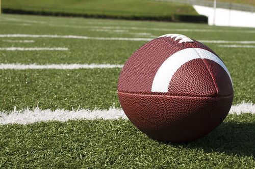
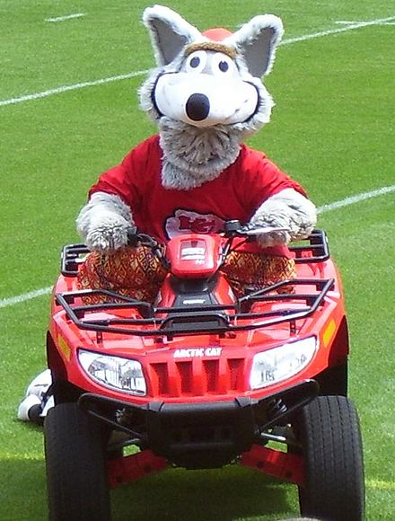
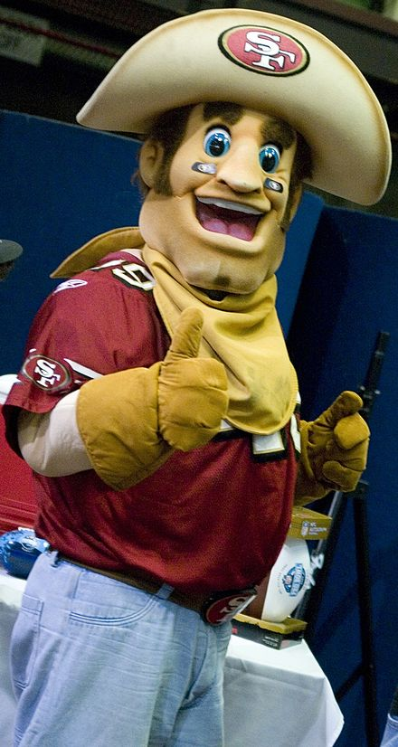

If you ask me the red team is a sure bet to win this thing.
This info page and its facts are dated Feb 1st, 2020.
CLICK HERE IF YOU PREFER DARK MODE OR TO SWITCH-BACK
Click the pic of the ball below for over twenty 'Big Game' football facts.
This is the first time these teams have played each other in the 'Big
Game'.
This game will be played in Miami, Florida at the Hard Rock Stadium.
The big game has been played in this stadium 6 times but it has had a
different name for most of the previous games.
The game will air on the Fox network and kickoff is set for 6:30 ET.
Brrr... the coldest 'big game' so far was back in 1972 in Tulane
Stadium Where the Cowboys and Dolphins played in 39-degree (f) temps.
There are still 4 teams that have never made it to the 'big game'
including the : Lions, Texans, Jaguars, and Browns.
The Steelers from Pittsburgh & Patriots from New England have the most
title wins with 6 each.
The Lombardi Trophy is made from sterling silver each year for the
winning team and only weighs 7 pounds.
On average Americans eat 1.3 billion chicken wings for the 'Big Game'.
Both teams had a first-round bye in this year's playoffs, marking the
seventh season in a row that both Super Bowl contenders finished as a
top-two seed in their conference.
Super Bowl LIV will mark the culmination of the NFL's 100th season.
The league's first-ever Super Bowl also featured the Chiefs, who lost
to the Green Bay Packers back in 1967.
Joe Montana played for both teams in his career but, only won Super
Bowls (4) with the 49 ers.
Speaking of QB's Peyton Manning is the only one to win a Super Bowl
with 2 different teams (Colts and Broncos).
Speaking of Broncos and Patriots they are tied as teams with the most
Super Bowl losses (5).
Which team is 'Home' or 'Away' is determined by the year. Odd-numbered
equate to an NFC Home designation, and even years are AFC.
Multi-platinum singer and songwriter Demi Lovato will sing the
national anthem ahead of Super Bowl LIV.
The Super Bowl LIV halftime show will be co-headlined by Shakira and
Jennifer Lopez.
In Las Vegas, more than $115 million is (legally) bet on the Super
Bowl every year.
In 1971 after Super Bowl V Chuck Howley becomes the only player from
the losing team to ever win MVP honors.
The lowest score was recorded on Feb 3rd, 2019 in Atlanta, GA with the
Patriots 13 - Rams 3 at Super Bowl LIII.
Hunter S. Thompson covered Super Bowls VII and VIII for Rolling Stone.

Click me to learn eight (8) facts about the team from San Fran
This is the 49ers' seventh Super Bowl appearance.
San Francisco went to five Super Bowls between 1981-1994 and won all
five of them.
49ers coach Kyle Shanahan will be making his Super Bowl debut,
solidifying the first father-son duo to make separate Super Bowl
appearances in NFL history. Shanahan's dad, Mike, was the Niners'
offensive coordinator during their 1994 championship, then led the
Denver Broncos to back-to-back titles in 1997-1998.
The 49ers are just the third team in NFL history to reach the Super
Bowl after winning four or fewer games the season before.
49ers quarterback Jimmy Garoppolo has two Super Bowl rings from his
time as Tom Brady's backup with the New England Patriots. He'll be
looking for his first "real" trophy against the Chiefs.
At 13-3 in 2019, San Francisco not only had the best record in the NFC
but its first winning season since 2013.
The team was founded in 1944, played its first season in 1946 and
merged with the NFL in 1950.
Their all-time leading scorer is Jerry Rice with 1,130 points
(1985-2000) he was a wide receiver.
Or click me to learn eight (8) facts about the Kansas City team
This is the first Super Bowl appearance for the Chiefs in 50 years.
On Jan. 11, 1970, the Chiefs topped the Minnesota Vikings in Super
Bowl IV for their first and only win so far.
Chiefs coach Andy Reid will be just the 24th head coach in NFL history
to appear in more than one Super Bowl.
Since returning from a knee injury that sidelined him for two games in
the fall, Mahomes (Chiefs QB) has thrown 19 touchdowns and just four
interceptions, including the playoffs.
The team was founded in 1959, played its first season in 1960 and
joined with the NFL in 1970.
In their first two seasons (1960 & 61) They played in Dallas and were
known as the Texans.
The team moved to Kansas City and became the Chiefs in 1963
Their all-time Leading Scorer: Nick Lowery, 1,466 points (1980-1993)
he was a placekicker.
Click a Mascot for 5 fun facts below.


Sourdough Sam is the 49ers mascot and was drafted to the team in 1994
Before becoming a miner this mascot was a prospector with a bushy
mustache and 2 pistols.
He is 6'6 not counting the hat.
His favorite movies include: "Gold Finger", "007 Golden Eye", "The
Gold Rush", "City Slickers 2: The Legend Of Curly's Gold" & "Austin
Powers: Goldmember" to name a few.
A prospector's pick is now his go-to prop.
He has a Facebook page with over 76 thousand followers.
KC Wolf is the Chiefs mascot and was introduced in 1989.
In 2006 he became the first NFL mascot inducted into the Mascot Hall
of Fame.
His name is derived from a group of fans ("the Wolfpack") when the
team played at Municipal Stadium.
The costume has 85-inch hips ... talk about though to find a belt.
KC Wolf averages 150 speaking engagements annually.
He has presented to over 3,000 school assemblies and kids programs for
students of all ages.
He has a Facebook page with over 37 thousand followers.